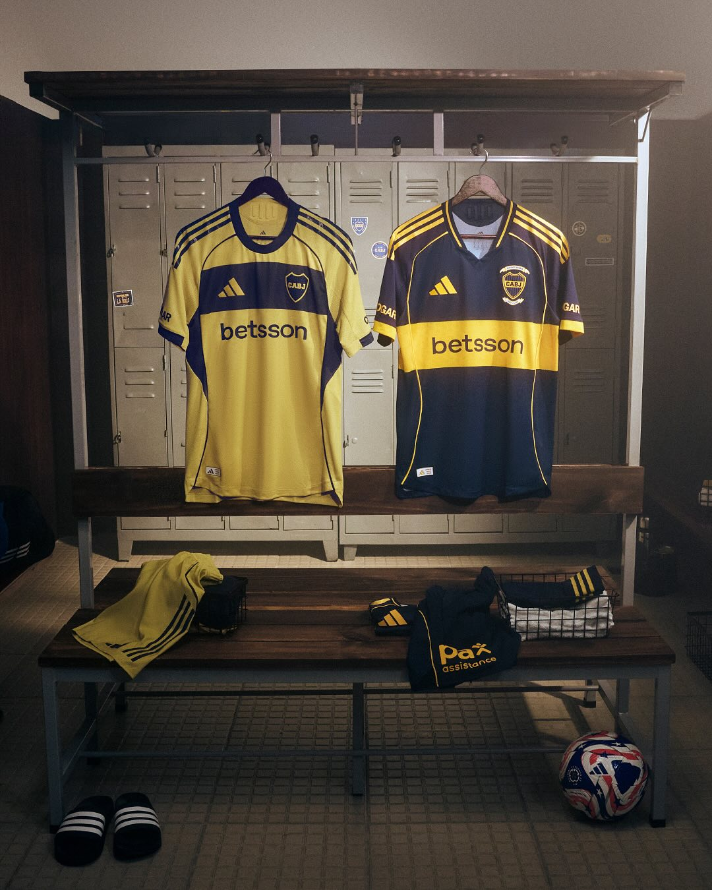
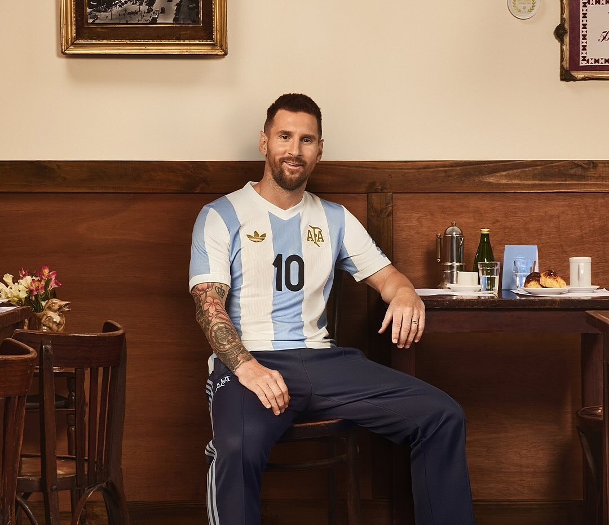
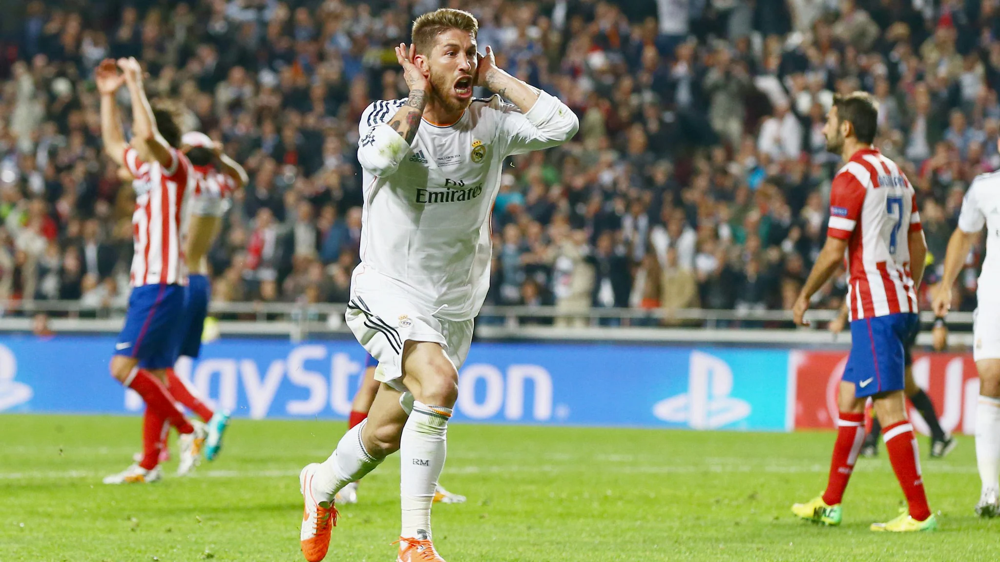
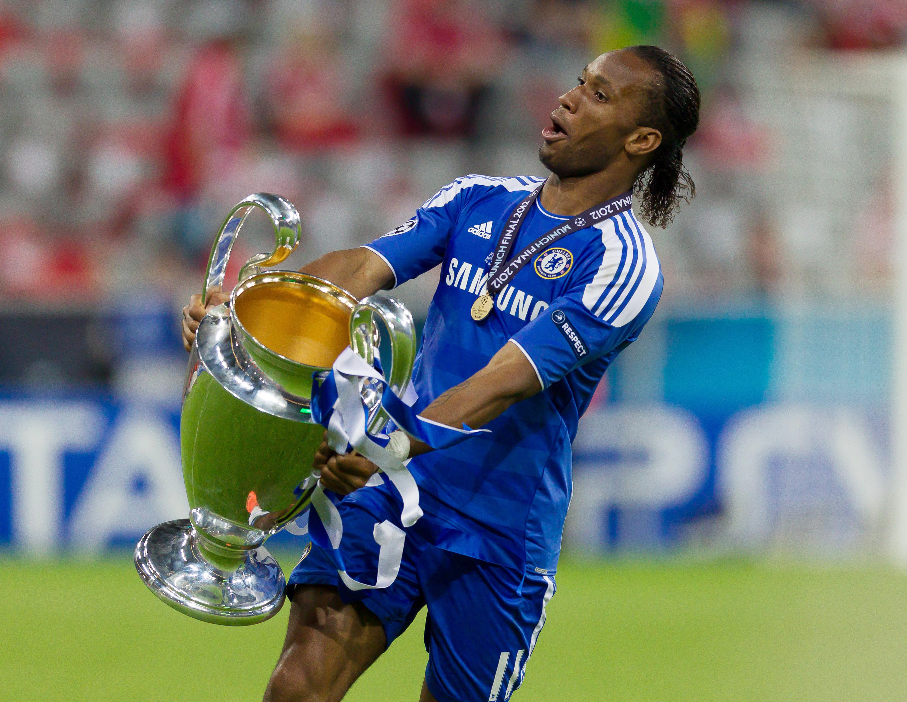

Camisetas Boca Juniors 2025
La camiseta titular de Boca Juniors celebra los 120 años de historia del club.
El diseño respeta los tradicionales colores azul marino y amarillo, con un escudo especial
ubicado sobre el pecho, del lado del corazón, que conmemora el aniversario.La camiseta
alternativa de Boca adopta un tono dorado como elemento principal, simbolizando los logros y la
gloria acumulados por el club a lo largo de su historia.

Camiseta selección Argentina 50 años
Bajo el lema “50 Años - En el Alma y en la Piel”, la camiseta se inspira en el
diseño de aquella primera casaca adidas-AFA producida para disputar el Mundial 1974.Al
tradicional diseño a franjas celestes y blancas se le suman un escudo especial de AFA envuelto
en laureles que destacan los logros de la Selección y las estrellas que representan los tres
mundiales ganados, más el regreso del logo de adidas Originals a una camiseta de juego, que le
otorgan a la prenda un estilo retro único

Camiseta Real Madrid 2014
Bajo el lema de la "Décima", esta camiseta blanca quedó grabada en la memoria
de los hinchas merengues como el símbolo del regreso a la gloria europea.Fue con esta camiseta
que el Real Madrid, tras doce años de espera, conquistó su anhelada décima Copa de Europa en
Lisboa, con aquel agónico cabezazo de Sergio Ramos en el minuto 93 como emblema de la
resiliencia blanca. Una prenda que no solo vistió campeones, sino que marcó el fin de una sequía
y el renacer de una era.

Camiseta FC Barcelona 2005
Con sus icónicas franjas anchas azulgranas y el escudo al centro, esta
camiseta del FC Barcelona 2005 quedó inmortalizada en los pies y la sonrisa de Ronaldinho. Fue
con ella que el brasileño deslumbró al mundo con su magia, liderando al Barça hacia la conquista
de La Liga y devolviendo al club su esencia ofensiva. Elegante, simple y poderosa, esta prenda
representa una era de fútbol espectáculo y uno de los jugadores más queridos de todos los
tiempos.

Camiseta River Plate 1996
Con la tradicional banda roja cruzando el pecho y detalles sobrios en negro,
esta camiseta quedó en la historia grande del club. Fue la que River usó en la final de la Copa
Libertadores 1996, cuando venció a América de Cali en el Monumental y levantó su segunda
Libertadores

Camiseta Chelsea FC 2012
Esta camiseta del Chelsea simboliza una de las gestas más inolvidables del
club. Usada en la final de la Champions League 2012 frente al Bayern Múnich, fue el uniforme con
el que los “Blues” conquistaron su primera Copa de Europa, en una noche dramática en el Allianz
Arena. Drogba, héroe eterno, igualó el partido de cabeza y selló la victoria en los penales. Una
camiseta que quedó ligada para siempre al espíritu de lucha y al sueño cumplido de toda una
generación.